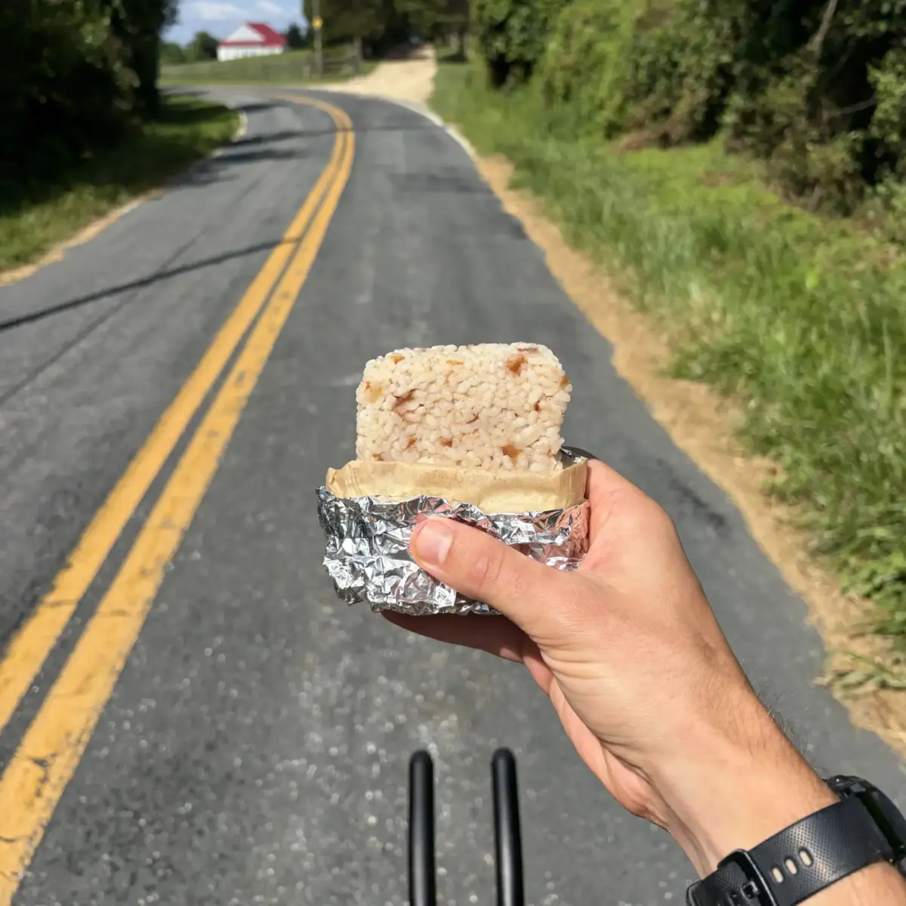

Date Rice Cakes
Ingredients
- 3/4 cup - Organic short grain rice - 105g carbs
- 8 deglet noor dates - 40g carbs
- 1 tbsp - Raw honey - 17g carbs
- 1 tsp - Coconut oil
- Pinch of salt
- Sprinkle of cinnamon
Method
- Cook short grain rice until sticky and slightly overdone
- Mix in chopped dates, honey, coconut oil, salt, and cinnamon until fully combined
- Press firmly into a small parchment-lined baking sheet to about one inch thickness
- Refrigerate for at least 1 hour until firm
- Cut into four rectangles and wrap each one tightly in parchment and tin foil
- Refrigerate for 2 days or freeze them
Recipe by Drew Addis — drewaddis.com